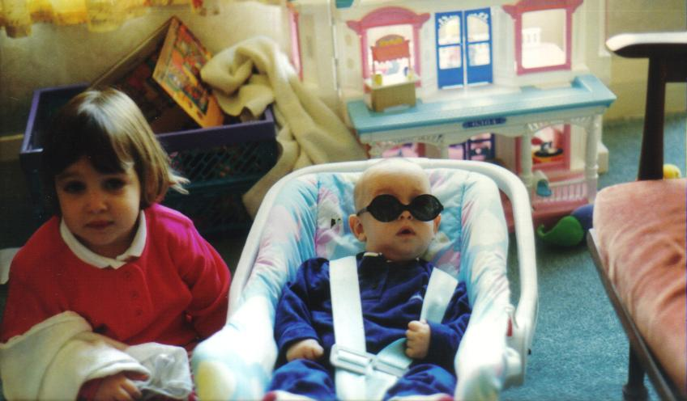
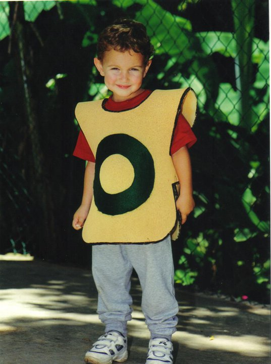
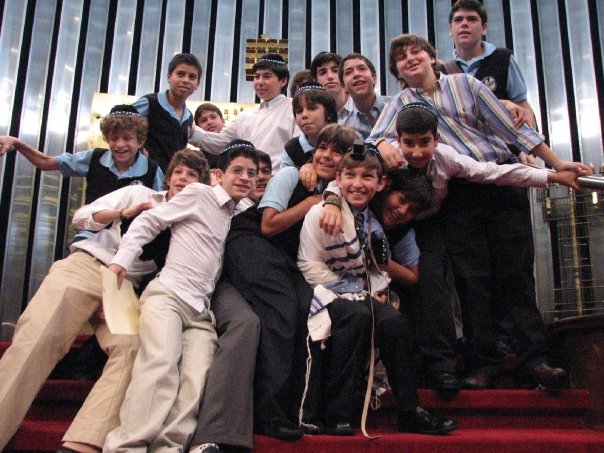
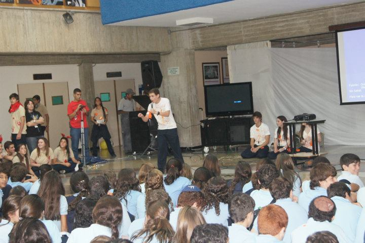
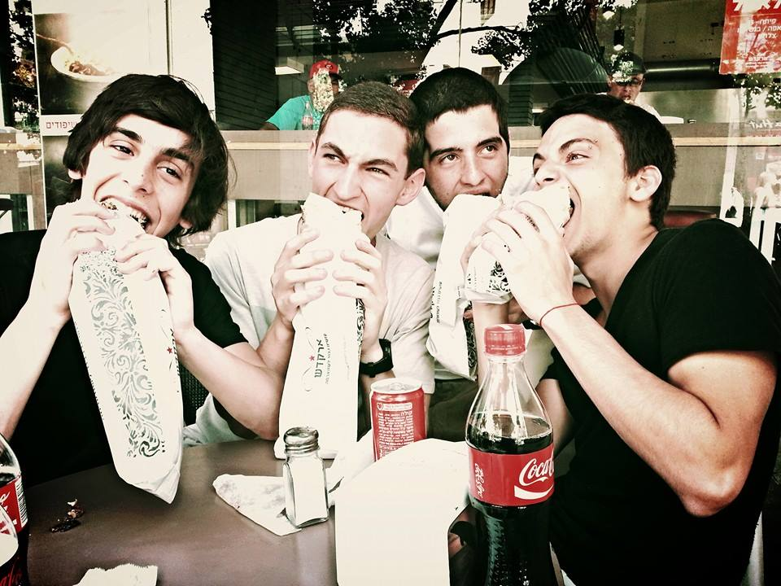
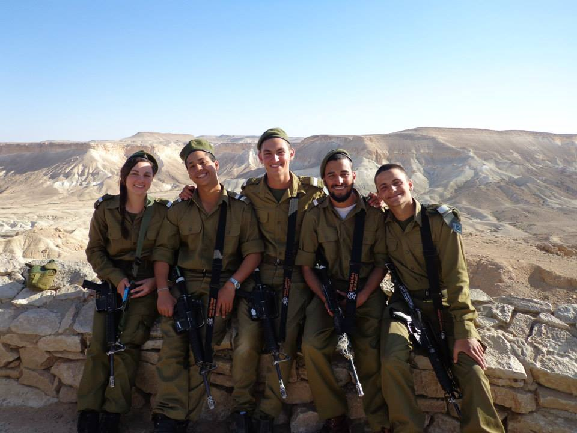
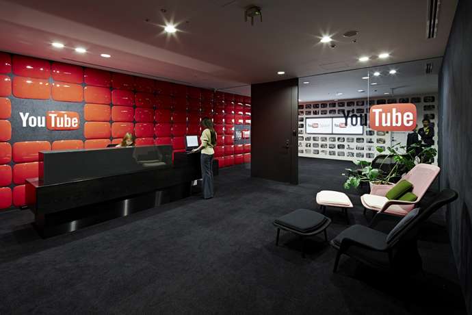

1995

I was born on September 6th, 1995 in Miami, FL. A month after being born, I moved on to live in England with my family, because my dad was finishing his studies at Oxford as a neurosurgeon.
1997

I moved to Caracas, Venezuela, where I would live the rest of my life (or most of it)! I went to a preschool called "Amiguitos" ("Little Friends"), and then went to a Jewish middle/high school called "Hebraica." This is where I met my best friends, most of which I still keep in touch with, and see whenever I'm on vacations.
2008

This was a big year for me, because it's when I had my Bar Mitzvah! After hours of praying in my Sinagogue, I was able to celebrate my "adulthood" with all of my friends and family. It was a really fun day!
2012

On my junior year of high school, I was a candidate for the Student Council. It was a big phase of my life because I was able to get out of my comfort zone, give a speech in front of 500 students, and become known for one of my passions: video editing/visual effects. It was a wonderful experience to become part of the student council, and I met tons of new people!
2013

Finally, after many years of study, I graduated from high school! At this moment I did not know what/where I wanted to study, so I decided to take a gap year in Israel (in a leadership program) to have some time to figure out what to do.
During the first 4 months of my gap year, I lived in Jerusalem. I took classes on numerous different subjects (leadership, hebrew, creativity, public speaking,...) and also dedicated lots of time to my college applications. Luckily, on late December, I found out that Tufts had accepted as an early decision applicant! This was huge news for my family, and a huge relief for me: now I would be able to enjoy the rest of my gap year without stressing out about where to study.
2014

From January to March, I participated in a basic training program in the Israeli Army (the IDF). I lived with many other friends in field conditions, carrying an M16 gun 24/7 (even while sleeping or taking a shower), while being trained on survival, teamwork and tough decision making situations in the army. I think everyone should have the chance to live this experience, as it taught me many things about the army, and about myself.
For the next 4 months, I volunteered on a kibbutz called Revivim, where I worked on gardening, cleaning the dining hall, taking care of the horses, and many other interesting rural activities.
Later, in September, I started my first semester at Tufts! By this point, I knew that I would major in Computer Science. During my first year I lived in Houston Hall, where I met the friends that I still hang out and live with today!
2015

This was a big year for me. After a rough (but really fun) first year of college, I finally had 4 months of vacations. During this time, I spent 2 months in Miami and the other 2 in Venezuela, with my family. While being home, I started an Instagram channel with my friend Alejandro, which we decided to call @2Venezolanos (2 Venezuelans). We used this channel to show others what we can achieve with our video editing skills. In just 2 months, we gained over 25 thousand subscribers! We went viral in Venezuela, and were interviewed by numerous radio stations, newspapers, and TV shows in Venezuela, Colombia and the USA. We currently have over 75 thousand subscribers, and we keep posting material on a monthly basis.
The biggest event of the year, however, was my sister Jessica's marriage! She married Alan Garzon, and they have lived together in Miami since then. We were very happy about the event and what it meant. Alan and his family are wonderful and amazing, and we are all really happy and grateful for them.
2016

During the summer, I was a Video Editing Intern at a startup called "La Voz Media Group." Even though it was not related to Computer Science, it gave me a good work experience, which would be useful for my later professional career. In fact, after lots of effort with internship applications for the summer of 2017, I was very lucky to get an offer from Google to work at the YouTube headquarters as a Software Engineering Intern! I am very excited for this, and I'll practice as much as I can to succeed during this great experience.